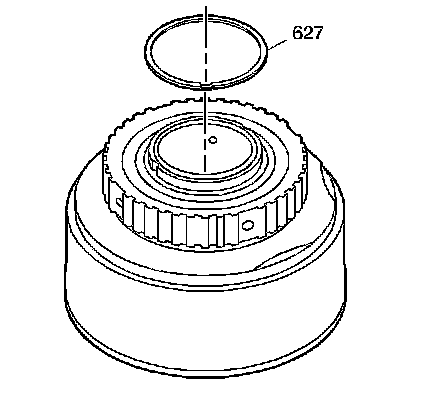
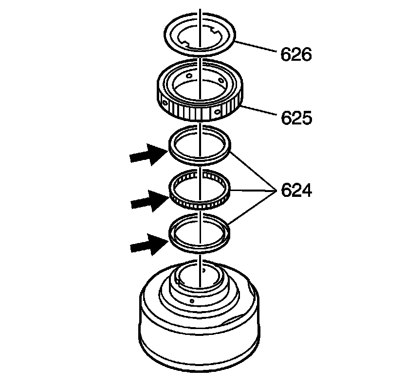
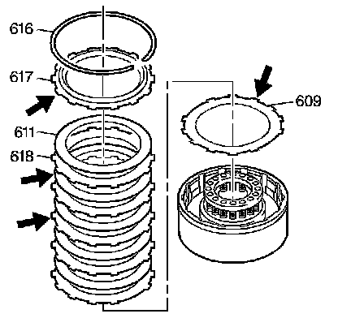
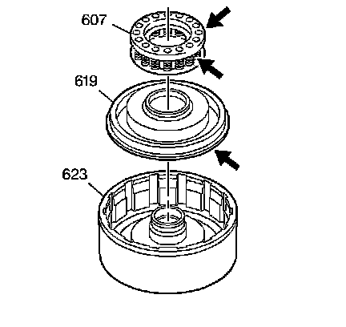
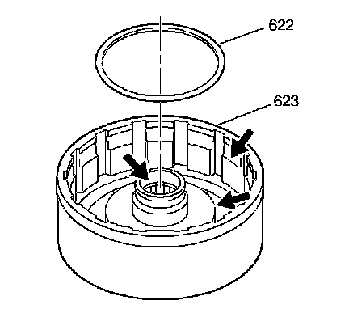

Direct Clutch Assembly Disassemble
Direct Clutch Assembly Disassemble
Tools Required
^ J 23327 Clutch Spring Compressor
^ J 25018-A Clutch Spring Compressor Adapter

1. Remove the intermediate clutch roller retainer retaining ring (627).

2. Remove the intermediate clutch roller retainer (626).
3. Remove the intermediate clutch sprag assembly (624) and race (625) as an assembly.
4. Remove the intermediate clutch roller outer race (625).
5. Inspect the intermediate clutch sprag assembly (624) for damaged rollers, a damaged cage or distorted springs.

6. Remove the direct clutch backing plate retaining ring (616).
7. Remove the direct clutch backing plate (617).
8. Remove the direct clutch plates (611, 618).
9. Remove the direct clutch (waved) plate (609).
10. Inspect the direct clutch backing plate (617) for damage and cracks.
11. Inspect the direct clutch plates (609, 611, 618) for wear, burned, flaking, scoring, and pitting.

12. Install the J 23327 and the J 25018-A onto the direct clutch housing assembly (623).
13. Compress the direct clutch spring assembly (607).
14. Remove the direct clutch spring retainer ring (608).
15. Remove the tools.

16. Remove the direct clutch spring assembly (607).
17. Inspect the direct clutch spring assembly (607) for collapsed coils and distortion.
18. Remove the direct clutch piston assembly (619). The direct clutch piston assembly is reusable unless it is damaged.
19. Inspect the direct clutch piston assembly (619) for damage and cracks.

20. Remove the direct clutch piston intermediate seal (622) from the direct clutch housing assembly (623).
21. Inspect the direct clutch housing assembly (623) for the following:
^ Cracks
^ Wear
^ Restricted/clogged oil passages
^ Free movement of checkballs (rattles)